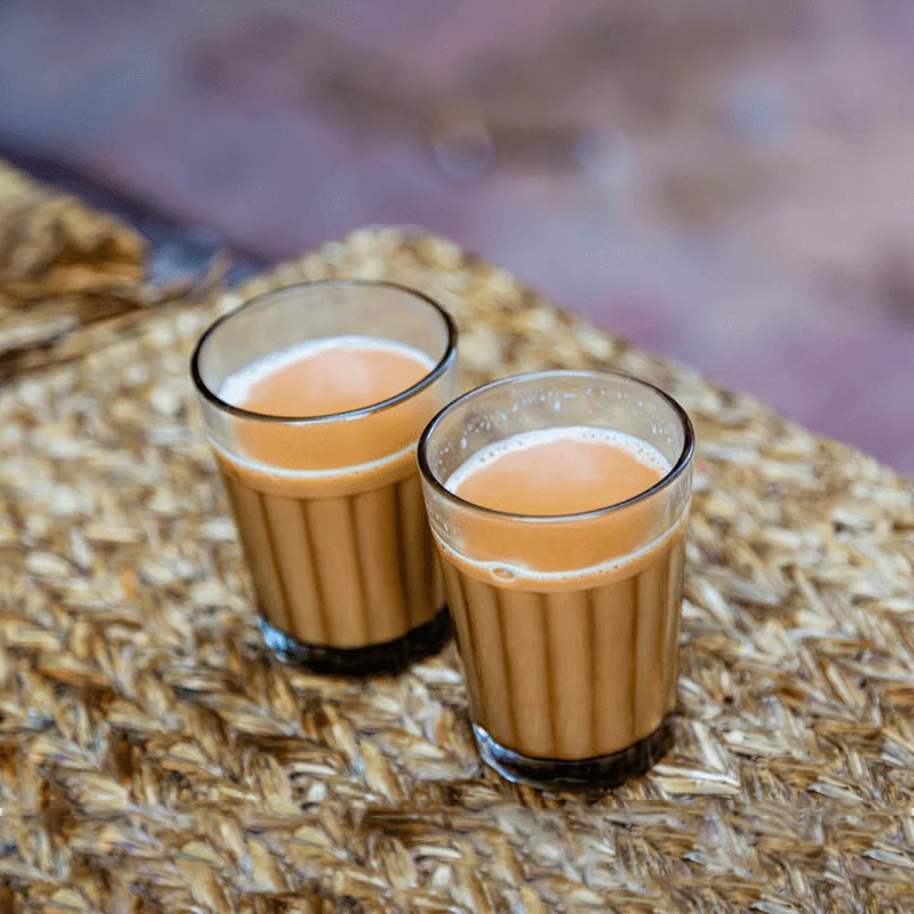

How to make Nepali Chiya (Tea)
Ingredients:
- 2 tablespoon of tea leaves
- 1 and 1/2 cup water
- 1 small piece of ginger, sliced or crushed
- 3 green cardamom pods, crushed
- 2 cup whole milk
- 3 tablespoon sugar, per taste
- a pinch of crushed black pepper
Instructions
- In a medium saucepan, heat water with spices for about 3-5 minutes.
- Add tea leaves, sugar and bring it to boil until it reaches brown color.
- Reduce the heat, then add milk and bring it back to boil
- Pour tea using a strainer then, serve it hot.